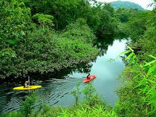
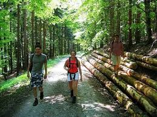
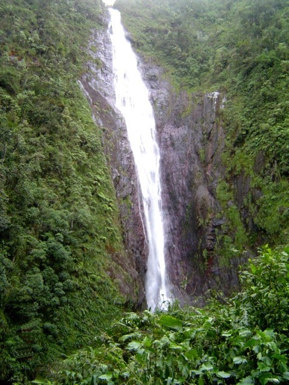
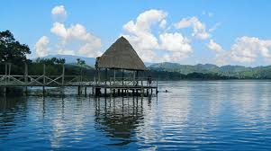
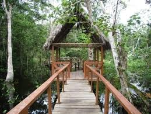

En el sur del distrito de Uchiza, en la provincia de Tocache, en San Martín, se encuentra la cascada Velo de Plata, un recurso natural en medio de la vegetación típica de la selva peruana, y de los cultivos de los moradores. Esta cascada, se halla a considerable distancia del centro poblado de Crisnejas, y para llegar a esta, es necesario caminar por casi treinta kilómetros. El camino puede hacerse, si se cuenta con buena condición física, en menos de cuatro horas, aunque puede prolongarse hasta por cinco horas. Otra forma de llegar, que puede ser consultada a los moradores del caserío de Crisnejas, es a caballo, dependiendo de las condiciones de la zona. La Cascada Velo de Plata, presenta una caída de agua de cien metros de altura, por lo que es considerada una de las más altas de la región. Las aguas de la Cascada Velo de Plata, se precipitan sobre un grupo de pozas naturales, donde tras, las casi cuatro horas de caminata al lugar, los visitantes pueden refrescarse.
Como otros recursos de la zona, y por la considerable distancia del lugar, se sugiere que la cascada sea visitada solo hasta las 4 de la tarde, ya que al tiempo de la caminata de regreso, hay que sumarle la hora y media de camino de retorno hacia Tocache. Si se desea, se puede pernoctar en Uchiza, donde se encuentran tanto hoteles, como restaurantes y centros de entretenimiento.
La Laguna azul es probablemente el lugar más visitado de todo Tarapoto. Se trata de una preciosa laguna que se encuentra en la localidad de Sauce a 54 kilómetros de la ciudad. Es un destino ideal para pasar el día en familia, tomar el sol y bañarse. Al estar al lado de un volcán inactivo, sus aguas se mantienen una temperatura de unos 20 grados y son perfectas para darse un baño y jugar en los diversos recreos que se encuentran alrededor de su orilla. En ellos además de tomar el almuerzo, pueden realizarse diversas actividades como canopy, kayak , moto acuática e incluso dar un paseo en caballo por los alrededores de la laguna.
Al lado de la laguna azul también se encuentra el famoso lago lindo pero debe tener en cuenta que no se trata de la mismo por si alguien le intenta vender una cosa por otra. El lago lindo es propiedad privada y solo podrá acudir a él si se aloja en el hotel puerto palmeras, propietario del recinto. Es también un lugar muy bello pero sin duda la principal atracción turítica de la zona es la laguna azul. De hecho, la gente de Tarapoto suele decir que si has estado en Tarapoto pero no has estado en la laguna azul, en realidad no has estado en Tarapoto. Por ello, si no quiere que se lo digan, la visita a esta bonita laguna no puede faltar en su exploración turística de la región.
Nacido en la ciudad de Uchiza, jurisdicción de la provincia de Tocache, región San Martin. Ciudad ubicada en el nor-oriente peruano, en el valle del Alto Huallaga. Disfruto de ver fútbol y películas